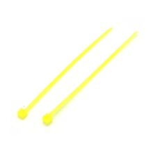

Кабельные стяжки нейлоновые 3×100 мм, жёлтые (100 шт.)
МеханикаКатегория
Механика
Тип
кабельная стяжка (хомут)
Материал
нейлон 6.6 (PA66)
Размер
3 × 100 мм
Цвет
жёлтый
Количество в упаковке
100 шт.
Назначение
фиксация и стяжка кабелей/жгутов
Переиспользование
одноразовая фиксация
Рабочий диапазон температуры
-40…+85 °C
Предел прочности на разрыв
около 18 lb (≈80 N) для типоразмера 100×2.5 мм; для 3×100 мм может отличаться
Кратко
Это нейлоновые кабельные стяжки длиной 100 мм и шириной 3 мм, жёлтого цвета, в упаковке по 100 штук. Используются для быстрого стягивания и фиксации проводов, жгутов и лёгких деталей.
Описание
Кабельные стяжки служат для аккуратной фиксации и группировки кабелей, проводов и других небольших элементов. Формат 3×100 мм обычно относят к компактным стяжкам для лёгких и средних жгутов внутри корпусов, шкафов и бытовой электроники. Нейлоновая основа даёт хорошую гибкость и надёжность одноразовой фиксации. Жёлтый цвет удобен для цветовой маркировки и визуального разделения жгутов. Упаковка на 100 штук подходит для монтажных и сервисных работ.
Документация
RS / HellermannTyton — кабельная стяжка 100 мм жёлтая, PA66Farnell / HellermannTyton — кабельная стяжка 100 мм жёлтая, Nylon 6.6
id hw-2026-105